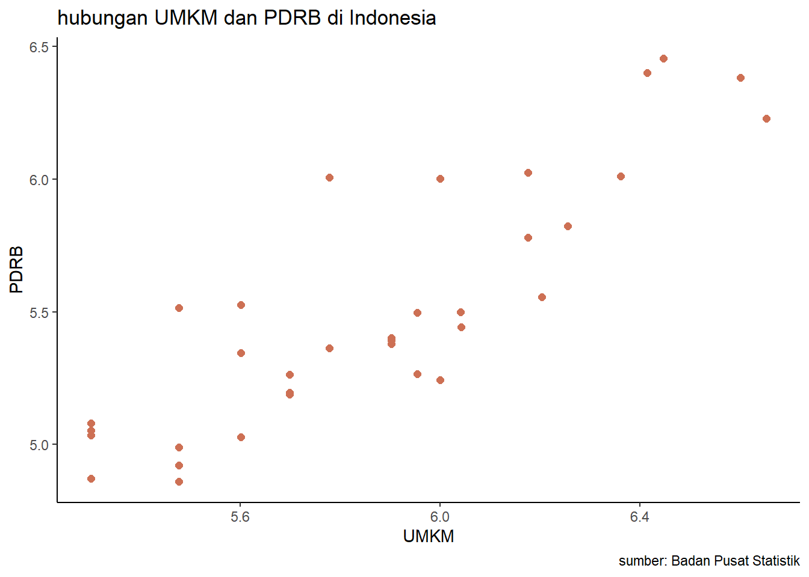
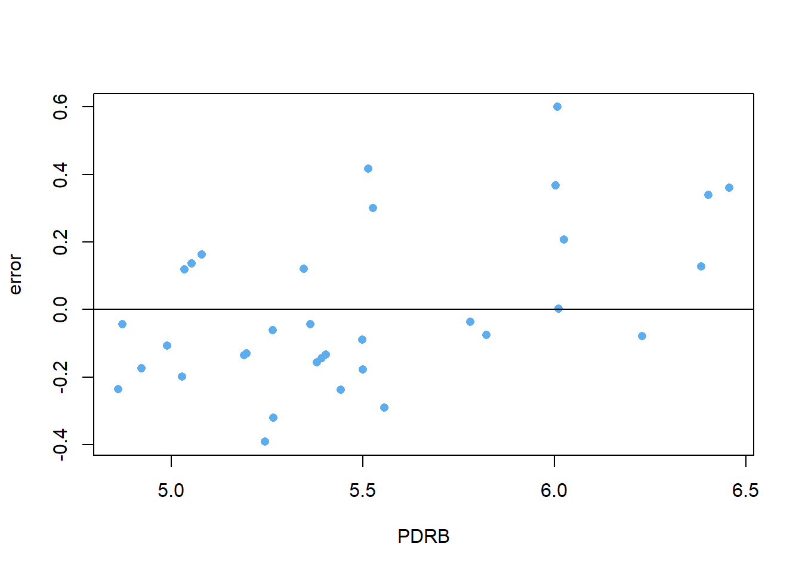
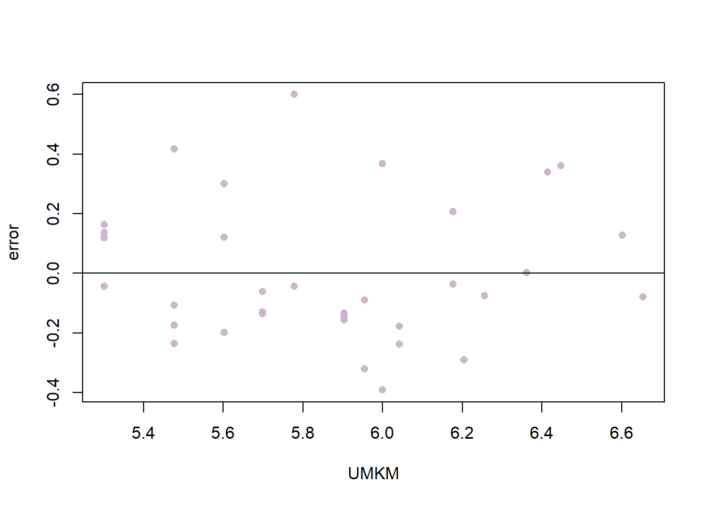

library(tidyverse)
library(readxl)
library(writexl)
library(dplyr)Pengaruh Jumlah UMKM teradap PDRB di Indonesia
Metode Penelitian Politeknik APP Jakarta

1 Pendahuluan
1.1 Latar belakang
Salah satu sektor yang sangat berperan penting dalam membantu memajukan perekonomian Indonesia adalah UMKM (Usaha Mikro, Kecil, dan Menengah). Jumlah UMKM di Indonesia sendiri pada tahun 2019 mencapai 64,2 juta unit dengan kontribusi terhadap PDB sebesar 61,07% atau Rp8.573,89 triliun. Di smping itu, UMKM telah menyerap sebesar 97% tenaga kerja Indonesia atau setara dengan 116 juta orang.
Ada faktor-faktor yang mempengaruhi perkembangan UMKM di Indonesia. Faktor-faktor tersebut sendiri dapat dilihat melalui sisi internal dan eksternal. Investasi menjadi salah satu faktor eksternal yang mendukung perkembangan UMKM. Investasi merupakan salah satu indicator yang menunjukkan tingkat kepercayaan investor terhadap kondisi perekonomian suatu negara. Selain itu, investasi juga dapat meningkatkan kapasitas produksi, teknologi, dan juga kualitas produk UMKM. Oleh karena itu, dengan adanya investasi UMKM yang ada dapat meningkatkan daya saing dan kinerjanya.
Salah satu yang menjadi indikator penilaian kinerja UMKM adalah Produk Domestik Regional Bruto (PDRB). PDRB adalah nilai tambah yang dihasilkan oleh keseluruhan unit usaha yang berada di suatu wilayah dalam kurun waktu tertentu. Kondisi ekonomi suatu wilayah dapat dilihat dari PDRB yang kemudian dapat digunakan untuk dasar perencanaan pembangunan daerah.
Berdasarkan latar belakang yang sudah dipaparkan terlihat jelas bahwa sangat penting untuk mengetahu pengaruh jumlah UMKM dan investasi UMKM terhadap PDRB di Indonesia. Maka dari itu, penelitian ini bertujuan untuk menganalisis pengaruh jumlah UMKM terhadap PDRB di Indonesia. Peneliti berharap dapat memberi manfaat bagi pemerintah, pelaku usaha, akademisi, dan masyarakat dalam mengembangkan potensi UMKM di Indonesia.
1.2 Ruang lingkup
Penelitian ini bertujuan untuk menganalisis pengaruh jumlah usaha mikro, kecil, dan menengah (UMKM) terhadap produk domestik regional bruto (PDRB) provinsi di Indonesia. Dalam penelitian ini, penulis ingin mengetahui seberapa besar kontribusi UMKM terhadap PDRB di Indonesia. Data yang digunakan adalah data UMKM dan PDRB tahun 2022 yang bersumber dari Badan Pusat Statistik (BPS). Data tersebut mencakup 35 provinsi di Indonesia yang menjadi wilayah cakupan penelitian.
1.3 Rumusan masalah
Apakah UMKM mempengaruhi PDRB provinsi di Indonesia ?
Bagaimana hubungan UMKM terhadap PDRB provinsi di Indonesia ?
1.4 Tujuan dan manfaat penelitian
Tujuan dari penelitian ini adalah untuk menganalisis pengaruh jumlah usaha mikro, kecil, dan menengah (UMKM) terhadap produk domestik regional bruto (PDRB) di 35 provinsi di Indonesia, menggunakan data dari Badan Pusat Statistik (BPS) periode 2022. Manfaat dari penelitian ini adalah untuk memberikan informasi dan rekomendasi kepada pemerintah, pelaku UMKM, dan masyarakat tentang kontribusi dan potensi UMKM dalam meningkatkan pertumbuhan ekonomi.
1.5 Package
Packages yang digunakan antara lain sebagai berikut:
2 Studi pustaka
UMKM
UMKM merupakan kependekan dari Usaha Mikro, Kecil, dan Menengah. UMKM adalah aktivitas ekonomi yang produktif yang dikelola oleh individu atau entitas usaha yang berskala kecil. UMKM berperan penting dalam ekonomi Indonesia, karena dapat membuka peluang kerja, menaikkan pendapatan, dan menurunkan kemiskinan. UMKM memiliki ragam jenis, seperti bidang kuliner, kecantikan, fashion, agribisnis, otomotif, dan sebagainya. Contoh UMKM di Indonesia adalah warung makan, salon, butik, peternakan, bengkel, dan lain-lain. UMKM dapat memajukan usahanya dengan cara meningkatkan kualitas pelayanan, memanfaatkan media sosial, melakukan survei pasar, mengikuti acara bazar, menjual produk secara online, menggunakan pembayaran elektronik, membangun relasi, dan mengikuti perkembangan tren.
PDRB
PDRB merupakan kependekan dari Produk Domestik Regional Bruto, yaitu besaran nilai tambah bruto yang berasal dari semua sektor ekonomi di wilayah suatu daerah. PDRB menunjukkan kinerja ekonomi suatu daerah dalam jangka waktu tertentu, baik berdasarkan harga berlaku maupun berdasarkan harga konstan. PDRB memiliki beberapa manfaat, di antaranya adalah untuk mengukur kemajuan ekonomi pada suatu daerah, mengetahui struktur ekonomi suatu daerah, dan digunakan sebagai dasar penyusunan kebijakan pemerintah daerah. PDRB juga dapat digunakan untuk mengetahui distribusi pendapatan antar daerah, dengan menghitung PDRB per kapita, yaitu perbandingan antara PDRB dan jumlah penduduk suatu daerah. PDRB per kapita dapat menunjukkan tingkat kesejahteraan masyarakat suatu daerah.
3 Metode penelitian
3.1 Data
| Provinsi | Jumlah.UMKM | PDRB | x | y | |
|---|---|---|---|---|---|
| 1 | Aceh | 1.102.000 | 276307 | 6,042181595 | 5,441391888 |
| 2 | Sumatera Utara | 2.300.000 | 1.024.891 | 6,361727836 | 6,010677679 |
| 3 | Sumatera Barat | 1.100.000 | 316.030 | 6,041392685 | 5,499728311 |
| 4 | Riau | 1.000.000 | 1.006.063 | 6 | 6,002625177 |
| 5 | Jambi | 600.000 | 230.474 | 5,77815125 | 5,362621939 |
| 6 | Sumatera Selatan | 1.500.000 | 602.696 | 6,176091259 | 5,780098309 |
| 7 | Bengkulu | 400.000 | 106.564 | 5,602059991 | 5,027610514 |
| 8 | Lampung | 1.600.000 | 358.875 | 6,204119983 | 5,554943206 |
| 9 | Kepulauan Bangka Belitung | 200.000 | 112.844 | 5,301029996 | 5,052478472 |
| 10 | Kepulauan Riau | 400.000 | 336.227 | 5,602059991 | 5,526632586 |
| 11 | DKI Jakarta | 2.800.000 | 2.857.079 | 6,447158031 | 6,455922249 |
| 12 | Jawa Barat | 2.600.000 | 2.518.512 | 6,414973348 | 6,401144024 |
| 13 | Jawa Tengah | 4.500.000 | 1.692.055 | 6,653212514 | 6,228414476 |
| 14 | DI Yogyakarta | 800.000 | 246.676 | 5,903089987 | 5,392126897 |
| 15 | Jawa Timur | 4.000.000 | 2.412.433 | 6,602059991 | 6,382455261 |
| 16 | Banten | 1.500.000 | 1.057.895 | 6,176091259 | 6,024442565 |
| 17 | Bali | 800.000 | 252.533 | 5,903089987 | 5,402318138 |
| 18 | Nusa Tenggara Barat | 900.000 | 184.798 | 5,954242509 | 5,266697267 |
| 19 | Nusa Tenggara Timur | 1.000.000 | 175.249 | 6 | 5,243655548 |
| 20 | Kalimantan Barat | 800.000 | 239.732 | 5,903089987 | 5,379726009 |
| 21 | Kalimantan Tengah | 400.000 | 221.721 | 5,602059991 | 5,345806829 |
| 22 | Kalimantan Selatan | 900.000 | 314.719 | 5,954242509 | 5,497922963 |
| 23 | Kalimantan Timur | 600.000 | 1.015.776 | 5,77815125 | 6,006797947 |
| 24 | Kalimantan Utara | 200.000 | 120.082 | 5,301029996 | 5,079477913 |
| 25 | Sulawesi Utara | 500.000 | 183.789 | 5,698970004 | 5,264319515 |
| 26 | Sulawesi Tengah | 500.000 | 154.648 | 5,698970004 | 5,189344308 |
| 27 | Sulawesi Selatan | 1.800.000 | 664.596 | 6,255272505 | 5,822557723 |
| 28 | Sulawesi Tenggara | 500.000 | 156.757 | 5,698970004 | 5,195226943 |
| 29 | Gorontalo | 300.000 | 72.570 | 5,477121255 | 4,860757123 |
| 30 | Sulawesi Barat | 300.000 | 83.581 | 5,477121255 | 4,922107563 |
| 31 | Maluku | 300.000 | 97.585 | 5,477121255 | 4,989383066 |
| 32 | Maluku Utara | 200.000 | 74.411 | 5,301029996 | 4,871637141 |
| 33 | Papua Barat | 200.000 | 108.267 | 5,301029996 | 5,034496103 |
| 34 | Papua | 300.000 | 326.703 | 5,477121255 | 5,514153122 |
Data diambil dari Badan Pusat Statistik (BPS) Indonesia tahun 2022 yang kemudian diolah dengan melakukan log pada kedua variabel, sehingga menghasilkan data variabel x dari jumlah UMKM dan variabel y dari data PDRB (miliar rupiah).
library(readxl)
umkm<-read_excel("C:/tugasuas/alya/umkm.xlsx")
head(umkm)# A tibble: 6 × 5
Provinsi `Jumlah UMKM` `PDRB (miliar rupiah)` x y
<chr> <chr> <chr> <dbl> <dbl>
1 Aceh 1102000 276307 6.04 5.44
2 Sumatera Utara 2.300.000 1024891 6.36 6.01
3 Sumatera Barat 1.100.000 316.030 6.04 5.50
4 Riau 1.000.000 1.006.063 6 6.00
5 Jambi 600.000 230.474 5.78 5.36
6 Sumatera Selatan 1.500.000 602.696 6.18 5.78library("ggplot2")
library("readxl")
library("dplyr")
ggplot(data=umkm,aes(x=x,y=y))+
geom_point(color="#CD7054",size=2)+
labs(title="hubungan UMKM dan PDRB di Indonesia",
x="UMKM",
y="PDRB",
caption = "sumber: Badan Pusat Statistik")+
theme_classic()
3.2 Metode analisis
Penelitian ini menggunakan metode regresi univariat, dengan menggunakan data UMKM dan PDRB provinsi di Indonesia tahun 2022. . Analisis ini bertujuan untuk menguji pengaruh variabel independen (jumlah UMKM) terhadap variabel dependen (PDRB). Dengan spesifikasi sebagai berikut:
\[ y_{t}=\beta_0 + \beta_1 x_t+\mu_t \] di mana \(y_t\) adalah PDRB dan \(x_t\) adalah UMKM.
4 Pembahasan
4.1 Pembahasan masalah
| Coefficients | Estimate | t value | Pr |
|---|---|---|---|
| Intercept | -0.5409 | -0.843 | 0.405 |
| x | 1.0293 | 9.439 | 9.13e-11 |
\[ y_{t}=\ -0.5409 + \ 1.0293x+\mu_t \]
Nilai koefisien regresi sebesar 1.0293, yang berarti jika x bertambah 1 satuan, maka y akan bertambah 1.0293 satuan, dengan asumsi variabel lain tetap. Nilai t hitung untuk koefisien regresi adalah 9.439, yang lebih besar dari nilai t tabel pada tingkat signifikansi 5%. Hal ini berarti koefisien regresi signifikan secara statistik. Sedangkan nilai p-value untuk koefisien regresi adalah 9.13e-11, yang lebih kecil dari tingkat signifikansi 5%, yaitu 0.05. Hal ini berarti koefisien regresi signifikan secara statistik.
Sedangkan untuk nilai konstanta (intercept) adalah -0.5409, yang berarti jika x bernilai 0, maka y bernilai -0.5409. Untuk nilai t hitung untuk konstanta adalah -0.843, yang lebih kecil dari nilai t tabel pada tingkat signifikansi 5%. Hal ini berarti konstanta tidak signifikan secara statistik.
4.2 Analisis masalah
Hasil regresinya adalah:
library(readxl)
umkm<-read_excel("umkm.xlsx")
reg<-lm(y~x,data=umkm)
summary(reg)
Call:
lm(formula = y ~ x, data = umkm)
Residuals:
Min 1Q Median 3Q Max
-0.39152 -0.15259 -0.06818 0.13448 0.59999
Coefficients:
Estimate Std. Error t value Pr(>|t|)
(Intercept) -0.5409 0.6414 -0.843 0.405
x 1.0293 0.1091 9.439 9.13e-11 ***
---
Signif. codes: 0 '***' 0.001 '**' 0.01 '*' 0.05 '.' 0.1 ' ' 1
Residual standard error: 0.2392 on 32 degrees of freedom
Multiple R-squared: 0.7357, Adjusted R-squared: 0.7275
F-statistic: 89.1 on 1 and 32 DF, p-value: 9.129e-11library(readxl)
umkm$m<-resid(reg)
plot(umkm$y,umkm$m,xlab="PDRB",ylab="error",col='#5CACEE',pch=16)
abline(h=0)
library(readxl)
umkm$m<-resid(reg)
plot(umkm$x,umkm$m,xlab="UMKM",ylab="error",col='#CDB5CD',pch=16)
abline(h=0)
Nilai R-squared adalah 0.7357, yang berarti variabel x dapat menjelaskan 73.57% variasi dari variabel y. Nilai ini menunjukkan bahwa tingkat keterkaitan antara x dan y kuat.
5 Kesimpulan
Dapat disimpulkan bahwa UMKM memiliki pengaruh positif terhadap PDRB di Indonesia, dapat dilihat dari nilai koefisien yang positif dan signifikan. Faktor yang mungkin terjadi terhadap hubungan UMKM dan PDRB adalah: UMKM mampu meningkatkan nilai produksi, pendapatan, dan lapangan kerja. UMKM juga menjadi salah satu faktor yang menentukan kesejahteraan masyarakat dan pembangunan manusia. Selain itu,UMKM memiliki peran penting sebagai critical engine perekonomian national, terutama dalam menghadapi dampak pandemi covid-19.
6 Referensi
Suci, Y. R. (2017). Perkembangan UMKM (Usaha mikro kecil dan menengah) di Indonesia. jurnal ilmiah cano ekonomos, 6(1), 51-58.
Tasyim, D. A., Kawung, G. M., & Siwu, H. F. D. (2021). Pengaruh Jumlah Unit Usaha UMKM Dan PDRB Terhadap Penyerapan Tenaga Kerja Di Sulawesi Utara. Jurnal EMBA: Jurnal Riset Ekonomi, Manajemen, Bisnis dan Akuntansi, 9(3).
Shofia, A., Triha, H., Putri, R. M., Alius, M., & Satria, T. F. (2023). Pengaruh Jumlah Angkatan Kerja, Jumlah UMKM, dan Inflasi Terhadap Laju PDRB Kota Padang. Jurnal Surya Teknika, 10(2), 858-865.
Aulia, R. (2021). Pengaruh pertumbuhan umkm terhadap pertumbuhan ekonomi di Ponorogo periode 2013-2017 (Doctoral dissertation, IAIN Ponorogo).
Putra, A. C. (2022). Pengaruh Pertumbuhan PDRB Usaha Mikro Kecil Menengah (UMKM) Terhadap Pertumbuhan Ekonomi Surabaya. Jurnal Lemhannas RI, 10(2), 65-78.